Git: kloonaaminen
- Eclipsen git-työkalussa on monia eri toimintoja
- Tässä esimerkissä keskitytään repositoryn kloonaamiseen githubista, committaamiseen, pushaamiseen ja pullaamiseen
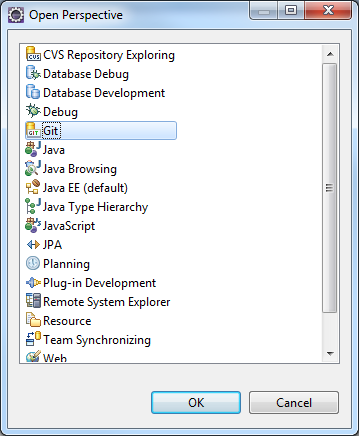
- Avataan ensin Git näkymä, klikkaamalla ensin Window -> Open perspective -> Other
- Aukeavasta listasta valitaan Git ja painetaan Ok
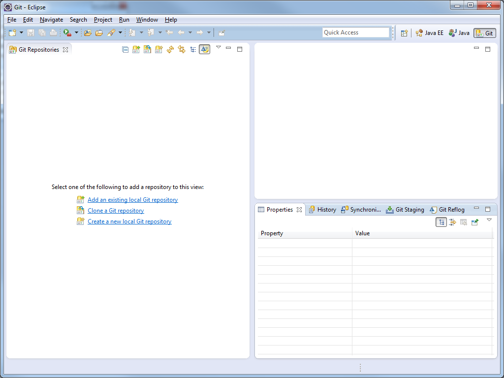
- Git-näkymässä voidaan hallita lisättyjä repositoryjä
- Valitaan Clone a Git repository
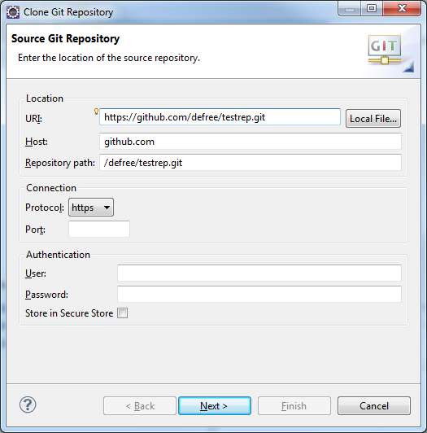
- Aukeavassa ikkunassa syötetään osoite mistä repository halutaan hakea. Tiedot syöttyvät automaattisesti kun osoite syötetään URI-kenttään
- Painetaan Next
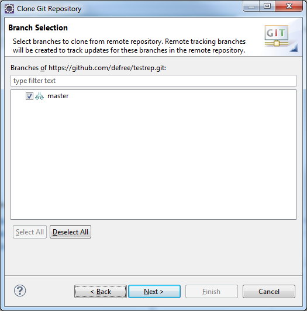
- Tässä ikkunassa näkyy repositoryssä olevat haarat. Riippuen projektista valitaan master, joka on päähaara tai jokin muu haara
- Painetaan Next
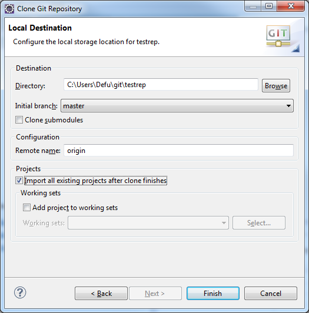
- Viimeisessä ikkunassa voidaan valita minne repositoryn sisältö tallennetaan ja voidaan suoraan importata olemassa olevat projektit reposta
- Koska testirepossa on Eclipsellä tehty projekti valmiina valitaan Import all existing projects
- Klikataan Finish
- Takaisin ohjelmointinäkymään pääsee klikkaamalla Java EE oikeasta yläkulmasta. Importatut projektit näkyvät vasemmalla projektilistauksessa.
Commit & push
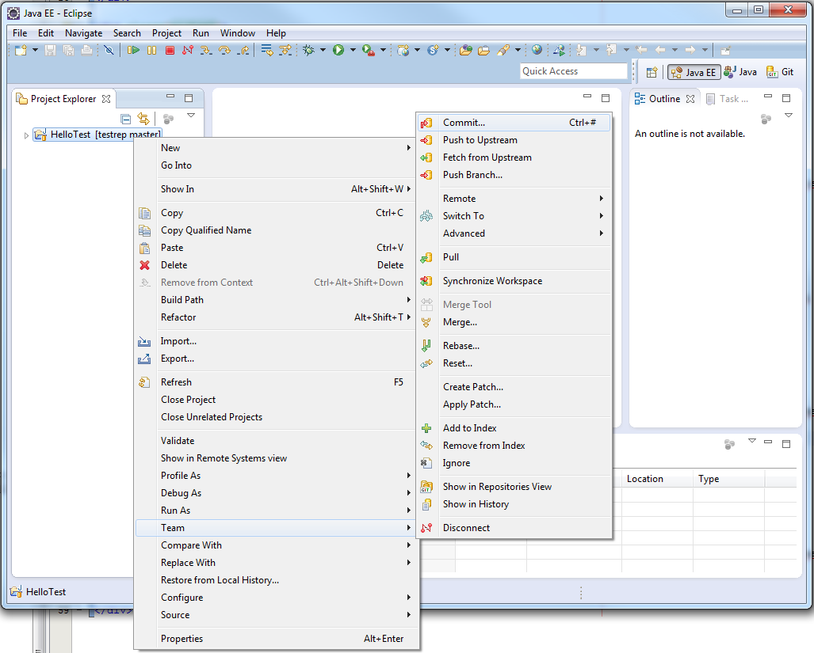
- Kun projektiin on tehty muutoksia, se näkyy projektilistauksessa mm. ">"-merkin kanssa projektin nimen vieressä
- Muutoksien tallentaminen ja vieminen remote repositoryyn tapahtuu Commit-toiminnon avulla, joka löytyy Team-valikosta
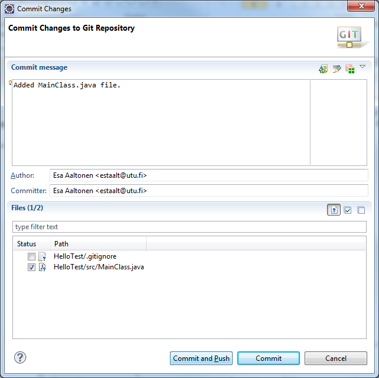
- Commit-näkymässä pitää lisätä commit-viesti, joka kuvaa mitä muutoksia tähän committiin on tehny
- Uudet tiedostot eivät ole valmiiksi valittuina ja ne pitää valita jos ne haluaa committiin mukaan. Tiedostoihin, jotka olivat jo olemassa, tehdyt muutokset tulevat automaattisesti jos ei niitä valitse pois.
- Kun ollaan valmiita, voidaan klikata suoraan Commit and Push
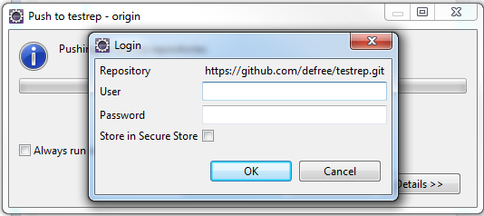
- Jos käyttäjänimeä eikä salasanaa olla aikaisemmin syötetty, voidaan niitä kysyä tässä vaiheessa
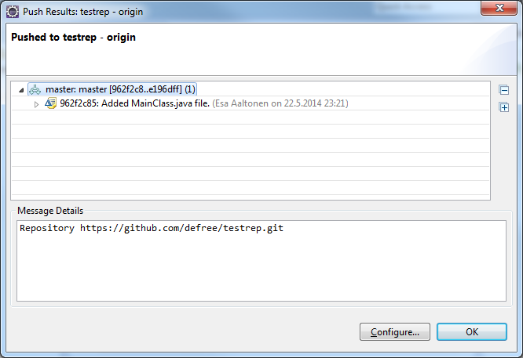
- Push on onnistunut jos virheviestejä ei tule
Pull
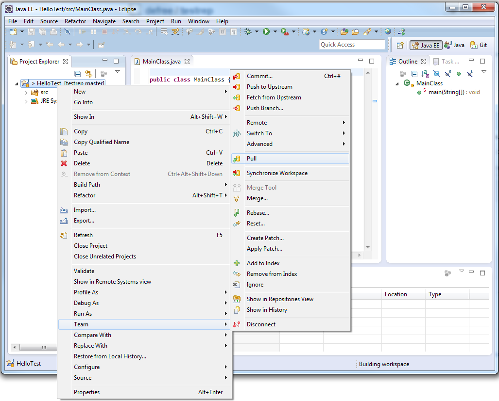
- Mikäli remote repositoryyn on tehty muutoksia, voidaan muutokset hakea Pull-komennolla. Sekin löytyy Team-valikosta
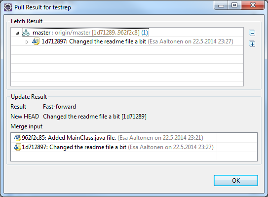
- Jos uusien muutoksien kanssa ei tule Merge-ongelmia, niin tässä ikkunassa näytetään haetut Commitit
- Klikataan Ok ja projekti on taas ajan tasalla